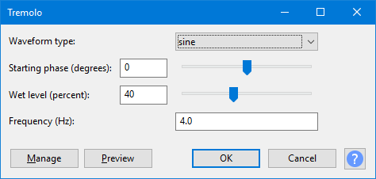

Tremolo
Tremolo modulates the volume of the selection at the depth and speed selected in the dialog. This is the same as the tremolo effect familiar to guitar and keyboard players.
- Accessed by:
- 
{kind=link}
Waveform type
Determines the "shape" of each tremolo (how it progresses between the lowest and highest volume as determined by the wetness level). Choice of sine, triangle, sawtooth, inverse sawtooth, square.
Starting phase (degrees)
Sets where to start the tremolo in the waveform cycle. The default (zero) starts the tremolo at the start of the cycle (as the waveform starts to rise from the lowest point).
Wet level (percent)
Sets the depth of tremolo. 0% is no tremolo, 100% sweeps between zero and maximum volume based on the original amplitude level.
Frequency (Hz)
Controls the speed of the oscillation; use higher frequencies for faster oscillation.
Buttons
Clicking on the command buttons give the following results:
- gives a dropdown menu enabling you to manage presets for the tool and to see some detail about the tool. For details see Manage presets.
- plays a short preview of what the audio would sound like if the effect is applied with the current settings, without making actual changes to the audio. The length of preview is determined by your setting in , the default setting is 6 seconds.
- applies the effect to the selected audio with the current effect settings.
- aborts the effect and leaves the audio unchanged.
 brings you to the appropriate page in the Manual, this page.
brings you to the appropriate page in the Manual, this page.